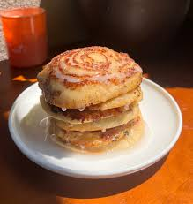

Cinnamon Roll Pancakes

Description
These Cinnamon Roll Pancakes combine the soft, fluffy texture of classic pancakes with the sweet spiced goodness of cinnamon rolls. Swirled with a rich cinnamon-sugar mixture, each bite offers the perfect blend of sweetness and warmth.
Ideal for breakfast or brunch, this recipe transforms a traditional favorite into a special treat that's easy to prepare. Whether you're hosting a weekend brunch or just want to make your morning extra indulgent, these cinnamon roll pancakes are sure to impress!
Ingredients
- Whole Milk
- Eggs
- Butter
- Flour
- Granulated Sugar
- Baking Powder
- Salt
- Brown Sugar
- Cinnamon
Steps
- Let's start by combining all of our wet ingredients in a bowl. 180ml of milk, 1 egg, and 30g of melted butter. Whisk everything together and set aside as we prepare our dry ingredients.
- In a seperate bowl combine 120g of flour, 30g of granulated sugar, 10g baking powder, and a pinch of salt.
- Little by little combine the wet and dry ingredients mixing our batter together. Now we can start working on our filling.
- Combine 65g brown sugar, 8g flour, 1 tsp of cinnamon, and 75g of softened butter. You should be left with a paste.
- Transfer you filling into a piping bag so we can pipe it on the pancakes later.
- Heat a griddle or skillet over medium heat and spray with cooking spray. Pour about 2/3 cup batter into the center of the griddle. Cook pancake untill bubbles start to form. Pipe filling over pancake.
- Flip the pancake and cook untill lightly browned and repeat untill the batter is finished.